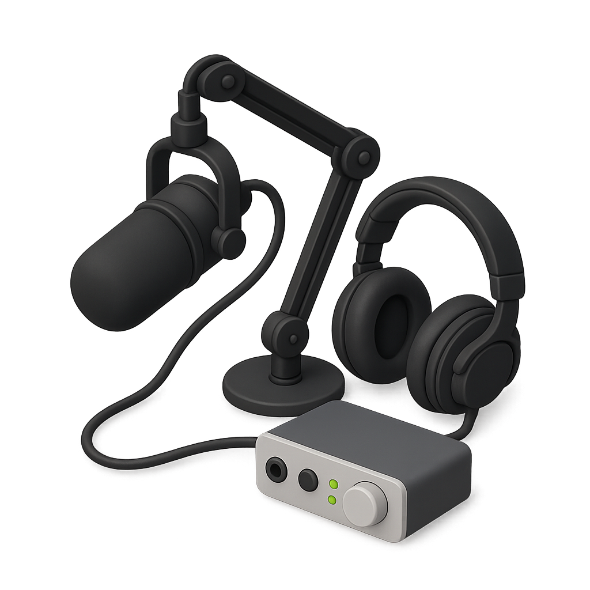

Una charla de 45–60 minutos sobre tu carrera, tus proyectos, tus errores y tus opiniones sobre el mundo tech. Nada formal, todo real.

Sin libreto rígido. Con preguntas preparadas pero siguiendo la conversación hacia donde vaya.
Hacé click en cada bloque para ver las preguntas. Es una guía, no un examen — no hay respuestas correctas.
No hay forma de prepararse mal. Pero estas cosas suelen hacer la diferencia.